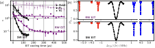
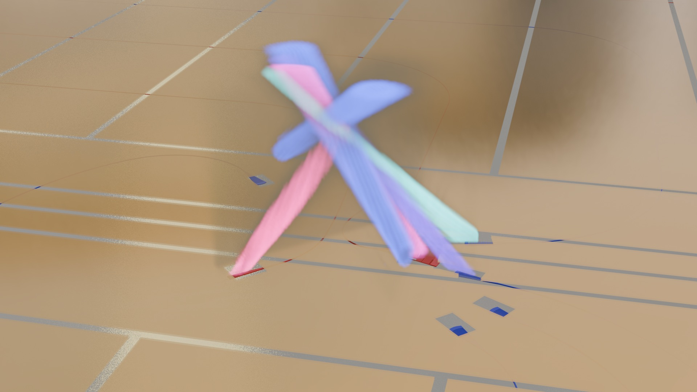

Rapid Multi-Mode Trapped-Ion Laser Cooling
Demonstrated novel laser cooling schemes for trapped ions in phase-stable standing-wave fields enabled by integrated photonics. This work targets a key bottleneck in trapped-ion quantum computing systems and supports scalable, robust control of ion motion.
Alongside the experimental work, I built automation and control tooling for daily calibration and data analysis to improve repeatability and throughput.

